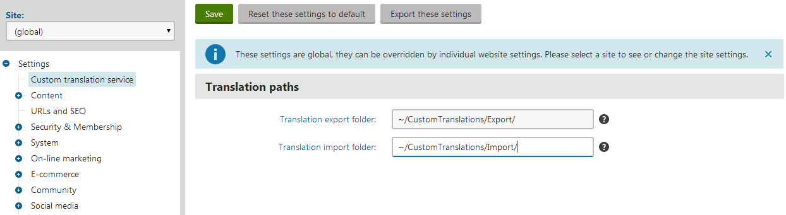
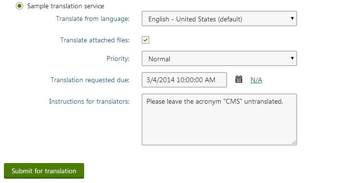

Creating human translation services
To develop a custom human translation service, you need to define a class that inherits from AbstractHumanTranslationService (found in the CMS.TranslationServices namespace).
The service class must override and implement the following abstract methods:
|
Method |
Description |
|
IsAvailable |
Checks whether the service is appropriately configured and ready to be used. For example, you can confirm that valid connection credentials are specified for the service in the website settings or check whether there is sufficient credit to perform translations. When translating pages, users can only choose the service if the IsAvailable method returns a true value. |
|
IsSourceLanguageSupported |
Checks whether the service supports translation from a specific language. The system calls this method before creating new translation submissions for the service. Users can only create submissions if the IsSourceLanguageSupported method of the selected service returns a true value for the source language. |
|
IsTargetLanguageSupported |
Checks whether the service supports translation to a specific language. The system calls this method before creating new translation submissions for the service. Users can only create submissions if the IsTargetLanguageSupported method of the selected service returns a true value for the target language. |
|
CreateSubmission |
Delivers the translation assignment to the translators. Called when creating new translation submissions for the service or resubmitting existing ones. |
|
CancelSubmission |
Executed when a user cancels a translation submission in the Translations application. Depending on the type of the service, you can delete the submission's physical file, call the appropriate service API or otherwise inform the translators that the submission has been canceled. |
|
DownloadCompletedTranslations |
Retrieves translated content from the service and imports it into the submission tickets. The system automatically calls this method when updating the status of translation submissions, which can be triggered by:
|
Kentico EMS required
Features described on this page require the Kentico EMS license.
Defining human service classes
This example shows the implementation of a translation service that saves translation submissions into zip packages and exports them into a designated folder. It also provides a way to automatically load completed translations from an import folder. This sample service is a simplified version of the default Manual translation service.
Open your web project in Visual Studio.
Add a new class into the App_Code folder (or Old_App_Code on web application installations). For example, name the class SampleTS.cs.
Change the class declaration and add references according to the following code:
usingSystem;usingSystem.Text;usingSystem.Data;usingSystem.Collections.Generic;usingSystem.Collections;usingSystem.Web;usingCMS.TranslationServices;usingCMS.DataEngine;usingCMS.Helpers;usingCMS.IO;usingCMS.DataEngine;/// <summary>/// Sample human translation service./// </summary>publicclassSampleTS : AbstractHumanTranslationService{}Add the following properties into the class:
/// <summary>/// Gets the path of the folder to which the service exports translation submissions./// </summary>publicstringExportFolder{get{stringfolder = SettingsKeyInfoProvider.GetValue(SiteName +".SampleTranslationExportFolder");if(string.IsNullOrEmpty(folder)){// Sets a default export folder if the path can't be loaded from the site settings.folder ="~/App_Data/Translations/Export/";}returnURLHelper.GetPhysicalPath(folder);}}/// <summary>/// Gets the path of the folder that the service checks for files containing completed translations./// </summary>publicstringImportFolder{get{stringfolder = SettingsKeyInfoProvider.GetValue(SiteName +".SampleTranslationImportFolder");if(string.IsNullOrEmpty(folder)){// Sets a default import folder if the path can't be loaded from the site settings.folder ="~/App_Data/Translations/Import/";}returnURLHelper.GetPhysicalPath(folder);}}
The ExportFolder and ImportFolder properties load the translation folder paths from the website settings. If the setting values are not available, the properties return default folder paths. The SiteName property used to build the setting key names is inherited from the parent class. It gets the code name of the site from which the translation was submitted.Define the required methods inside the class:
IsAvailable/// <summary>/// Checks if all conditions required to run the service are fulfilled./// The sample service only needs to know the paths for its import and export folders, but it uses default paths if the values are not specified through the settings./// </summary>publicoverrideboolIsAvailable(){// Returns a true value to indicate that the service is always available.returntrue;}IsSourceLanguageSupported/// <summary>/// Checks if the service supports a specific source language./// </summary>/// <param name="langCode">Culture code of the source language to be checked</param>publicoverrideboolIsSourceLanguageSupported(stringlangCode){// All source languages are supported.returntrue;}IsTargetLanguageSupported/// <summary>/// Checks if the service supports a specific target language./// </summary>/// <param name="langCode">Culture code of the target language to be checked</param>publicoverrideboolIsTargetLanguageSupported(stringlangCode){// All target languages are supported.returntrue;}CreateSubmission/// <summary>/// Creates a new submission or resubmits it if the submission ticket already exists./// Returns an empty string if all operations are successful or the details of the encountered error./// </summary>/// <param name="submission">Info object representing the translation submission</param>publicoverridestringCreateSubmission(TranslationSubmissionInfo submission){try{if(submission !=null){// Gets the path of the zip file containing the submission.stringpath =null;if(string.IsNullOrEmpty(submission.SubmissionTicket)){path = Path.Combine(this.ExportFolder, ValidationHelper.GetSafeFileName(submission.SubmissionName) +".zip");path = FileHelper.GetUniqueFileName(path);// Assigns the zip file name as the ticket ID of the new submission.submission.SubmissionTicket = Path.GetFileName(path);}else{// The resubmit action uses the existing file path stored in the ticket ID.path = Path.Combine(this.ExportFolder, submission.SubmissionTicket);}// Writes the zip file under the specified path. Overwrites the file if it exists.DirectoryHelper.EnsureDiskPath(path,null);using(FileStream stream = File.Create(path)){// Creates the zip archive with the translation assignment.// The archive contains the source text of the submitted pages in XLIFF format and an HTML instructions file with the details entered for the translation.TranslationServiceHelper.WriteSubmissionInZIP(submission, stream);}}}catch(Exception ex){TranslationServiceHelper.LogEvent(ex);returnex.Message;}returnnull;}CancelSubmission/// <summary>/// Cancels the specified submission./// Returns an empty string if all operations are successful or the details of the encountered error./// </summary>/// <param name="submission">Info object representing the canceled submission</param>publicoverridestringCancelSubmission(TranslationSubmissionInfo submission){try{if(submission !=null){// Tries to delete the assignment zip file (loads the file name from the submission ticket ID).stringpath = Path.Combine(this.ExportFolder, submission.SubmissionTicket);if(File.Exists(path)){File.Delete(path);}}}catch(Exception ex){TranslationServiceHelper.LogEvent(ex);returnex.Message;}returnnull;}DownloadCompletedTranslations/// <summary>/// Retrieves completed XLIFF translation files from the service and imports them into the system./// Returns an empty string if all operations are successful or the details of the encountered error./// </summary>publicoverridestringDownloadCompletedTranslations(stringsiteName){try{if(Directory.Exists(this.ImportFolder)){// Gets all zip files from the import folder.string[] files = Directory.GetFiles(this.ImportFolder,"*.zip");foreach(stringfilePathinfiles){stringfile = Path.GetFileName(filePath);// Gets all translation submissions matching the zip file name.DataSet ds = TranslationSubmissionInfoProvider.GetSubmissions("SubmissionTicket = '"+ SqlHelper.EscapeQuotes(file) +"'",null);if(!DataHelper.DataSourceIsEmpty(ds)){foreach(DataRow drinds.Tables[0].Rows){TranslationSubmissionInfo submission =newTranslationSubmissionInfo(dr);// Only imports content for submissions in the 'Waiting for translation' status.if(submission.SubmissionStatus == TranslationStatusEnum.WaitingForTranslation){// Gets the zip name from the submission ticket.stringfileName = submission.SubmissionTicket;stringpath = Path.Combine(this.ImportFolder, fileName);if(File.Exists(path)){// Imports XLIFF file content from the zip package.stringerr = TranslationServiceHelper.ImportXLIFFfromZIP(submission, FileStream.New(path, FileMode.Open));if(string.IsNullOrEmpty(err)){// Changes the status to 'Translation ready' and saves the submission.submission.SubmissionStatus = TranslationStatusEnum.TranslationReady;TranslationSubmissionInfoProvider.SetTranslationSubmissionInfo(submission);}else{returnerr;}}}}}}}returnnull;}catch(Exception ex){TranslationServiceHelper.LogEvent(ex);returnex.Message;}}Follow the instructions on the Loading translation service classes from App_Code page to ensure that the application can access the custom class.
Registering human translation services
Once you have implemented the class with the required functionality, you need to register the translation service:
Log in to the Kentico administration interface.
Open the Translation services application.
Click New translation service.
Enter the following values into the service's properties:
Display name: Sample translation service
Service provider - Assembly name: (custom classes)
Service provider - Class: SampleTS
Is machine translation service: no (not checked)
Service is enabled: yes (checked)
Supports submitting instructions: yes
Supports prioritizing of submissions: yes
Supports submission deadlines: yes
Supports manual status update: yes
Supports canceling submissions: yes
Translation service parameter: leave empty
Click Save.
The service is now ready to be used.
Adding custom settings for translation services
To allow administrators to configure the import and export folder paths of the service, you need to create custom settings:
Open the Modules application.
Click New module.
Type Custom translation settings as the module's Display name.
Click Save.
Open the module's Settings tab.
Click New category ( ):
Display name: Custom translation service
Code name: CustomTranslationService
Switch to the Settings sub-tab of the category and add a New settings group.
Display name: Translation paths
Code name: TranslationPaths
Click New settings key under the Translation paths section and define two setting keys:
Display name: Translation export folder
Code name: SampleTranslationExportFolder (matches the name of the key loaded by the ExportFolder property in the code of the sample service class)
Description: Sets the path of the folder where the system creates translation submissions. If empty, the ~/App_Data/Translations/Export/ folder is used.
Type: Text
Display name: Translation import folder
Code name: SampleTranslationImportFolder (matches the name of the key loaded by the ImportFolder property in the code of the sample service class)
Description: Sets the path of the folder from which the system loads completed translation packages. If empty, the ~/App_Data/Translations/Import/ folder is used.
Type: Text
Click Save for each key.
You can now set the service's folder paths for specific websites in the Settings application, within the Custom translation service category.

Custom settings for the sample translation service
Result
When submitting pages for translation, the dialog offers the Sample translation service as one of the translation options.

Try translating a page using the custom service:
Click Submit for translation in the New culture version dialog.
The system creates a new submission and adds the translation zip package into the specified export folder.
Translate the content and add the modified .xlf file into a new zip package (with the same name as the export zip file).
Place the zip package into the import folder.
In the Kentico administration interface, open the Translations application and click Update statuses.
The service imports the translated content and switches the matching submission to the Translation ready status.
Click the Process submission ( ) action of the submission.
The system transfers the translated content into the corresponding page and changes the submission status to Translation imported.
The page is now available in the target language.